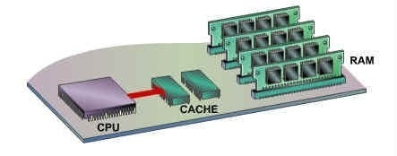
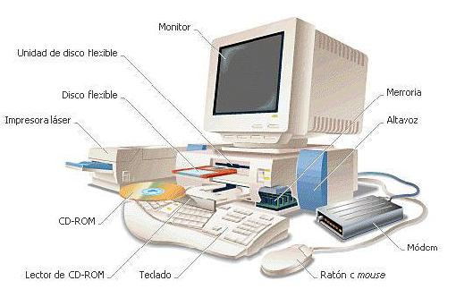

1.2.2 Memorias
Memoria RAM

La memoria de acceso aleatorio (Random Access Memory, RAM) se utiliza como memoria de trabajo de computadoras y otros dispositivos para el sistema operativo, los programas y la mayor parte del software.
Memoria Cache

La memoria cache es la solución al problema de rendimiento del sistema de memoria. Es muy pequeña y esta incluida en el interior del microprocesador.
Igualmente existen varios tipos de memorias RAM tanto volatiles como memorias ROM no volatiles, a continuacion, se vera una tablitas con esas memorias.

1.2.3. Manejo de la Entrada/Salida.
Modulos de Entrada/Salida.
Los modulos de entrada y salida junto con la memoria interna y el procesador, conforman la estructura basica del computador. A traves de los dispositivos de entrada y salida o dispositivos perifericos, el computador interactia con su entorno exterior.

Funciones básicas de un modulo de entrada y salida.
> Control y temporización, para coordinar el trafico entre los recursos internos y los dispositivos externos.
> Comunicación con el procesador, que implica decodificación de ordenes, intercambio de datos a través de bus.
> Comunicación con los dispositivos externos, mediante el intercambio de ordenes, información de estados y datos.
> Almacenamiento temporal de datos, para poder realizar las trasferencias de datos entre los dispositivos a distintas velocidades.
> Detección de errores e informar de estos al procesado.